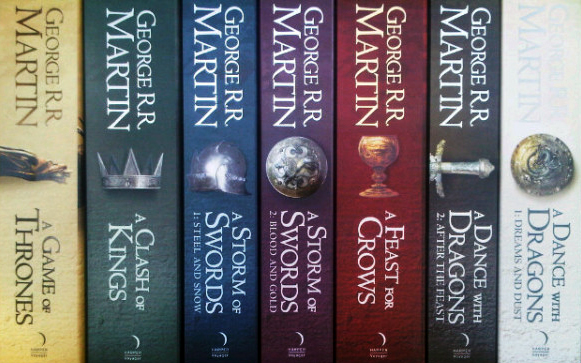

Serijal knjiga pesma leda i vatre
Pesma leda i vatre (engl. A Song of Ice and Fire, ASoIaF) je nedovršeni serijal romana epske fantastike amerièkog autora Džordža R. R. Martina. Martin je zapoèeo pisanje romana 1991. godine, a prvi roman je objavljen 1996. Prvobitno je planiran kao trilogija, ali se serijal trenutno sastoji od 5 knjiga sa još 2 koje su planirane. Kao dodatak ima još tri novela, a planirane su još nekoliko. Sinopis novela je izveden iz glavnog sinopisa serijala.
Prièa Pesme leda i vatre se dogaða u izmišljenom svetu, uglavnom na kontinentu zvanom Vesteros, ali takoðe i na velikoj kopnenoj masi na istoku znanom kao Esos. Rasa veæine likova je ljudska, ali kako serijal odmièe druge rase se dodaju, kao na primer Tuðini, nadljuska hladna rasa sa Severa za koju se je verovalo da je istrebljena, i zmajevi koji bljuju vatru sa Istoka. Radnja se dešava sa taèke gledišta iz treæeg lica sa pregršt likova (31 na kraju pete knjige).
Glavna prièa ima tri zasebna toka, ali kako radnja odmièe oni se sve više prepliæu. Prvi tok je dinastièki graðanski rat za kontrolu nad Vesterosom izmeðu nekoliko porodica. Druga je rastuæa pretnja od Tuðina, koji se nalaze iza velikog ledenog zida na severnoj granici Vesterosa. Treæa je ambicija Deneris Targarjen, proterane æerke kralja ubijenog 15 godina ranije u drugom graðanskom ratu, da se vrati u Vesteros i povrati presto.
Serijal je preveden u više od 20 jezika. Èetvrta i peta knjiga je zauzela vrh liste bestselera Njujork Tajmsa 2005. i 2011. godine. Ukupno prodato je više od 15 miliona primeraka knjiga širom sveta.[1] Jedna od dodatnih novela je dobila Hugo Award u kategoriji nauène fantastike. Serijal je podloga mnogim drugim delima ukljuèujuæi i televizijsku seriju HBO-a Igra prestola, serijal stripova, kartaškim igrama, tablerskim igrama i dvema video igrama.[2]
Serijal knjiga Pesma leda i vatre sastoji se od 7 knjiga: